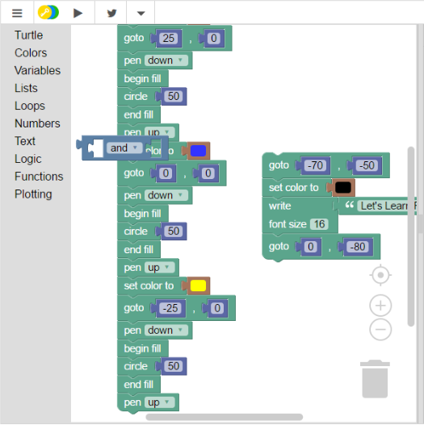
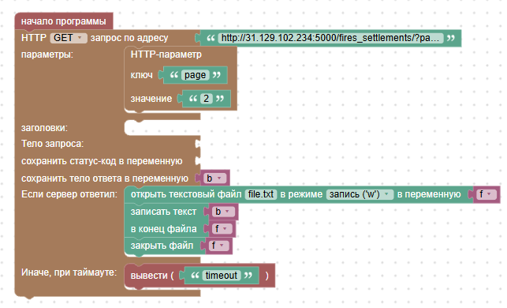
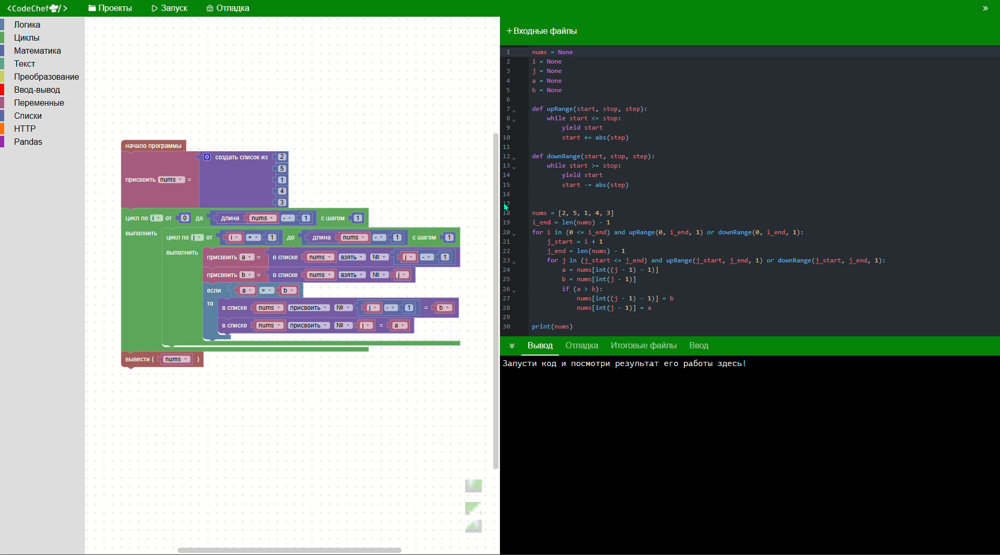
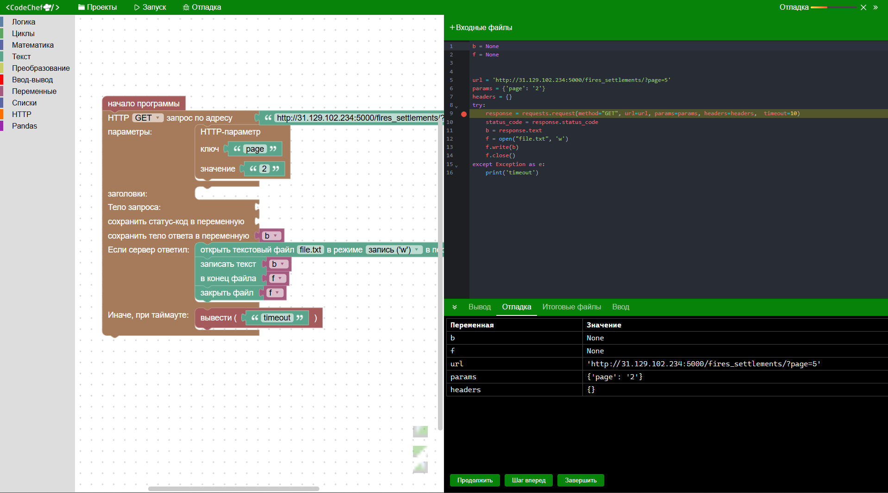
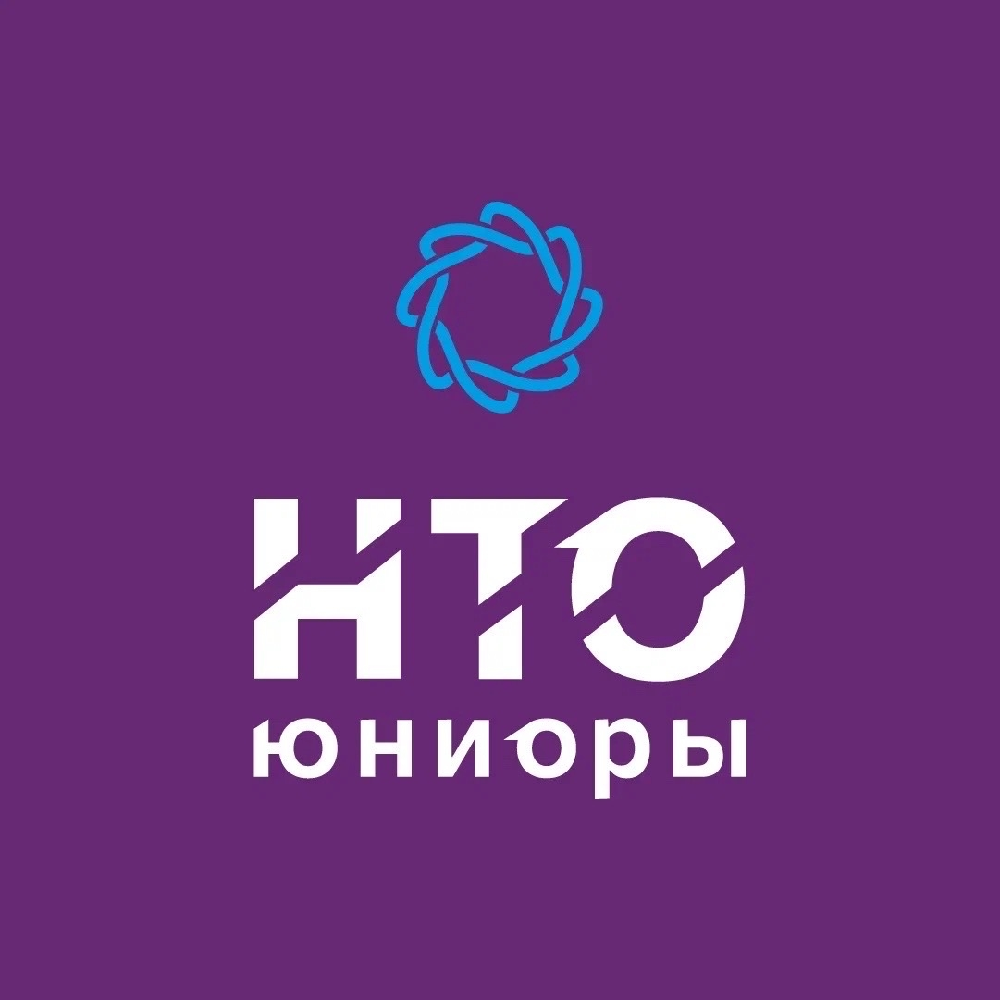
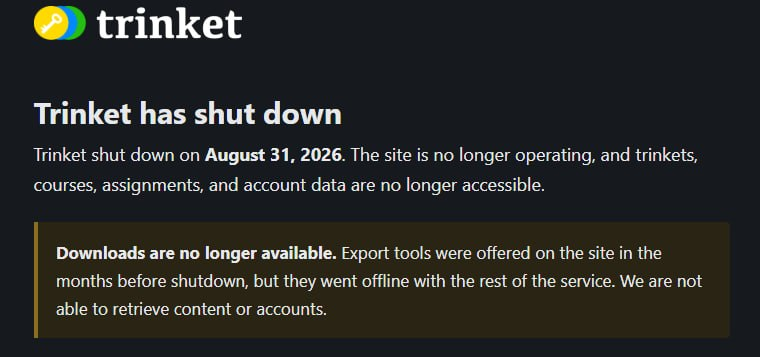
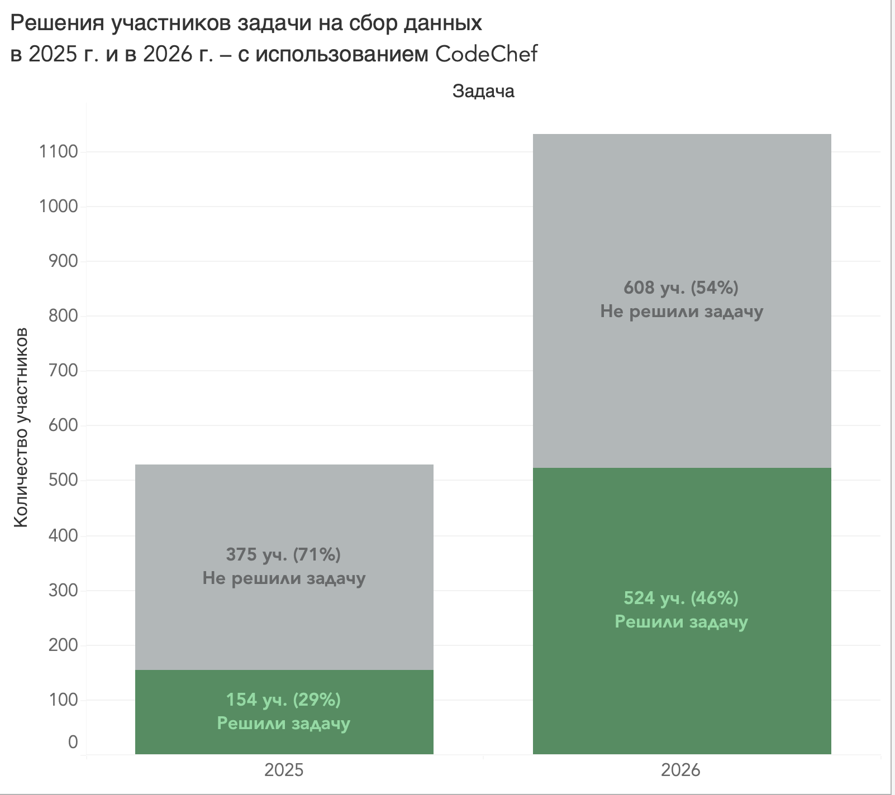
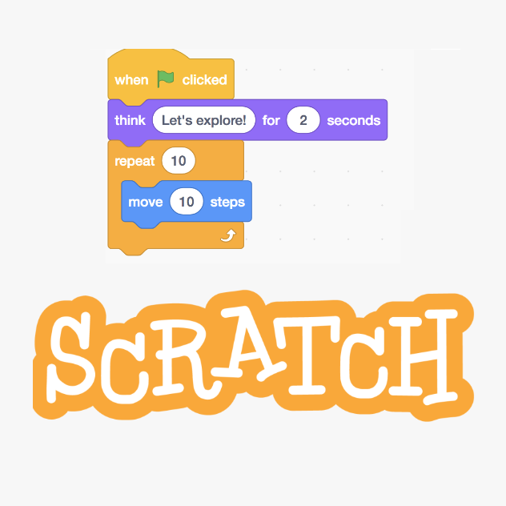

Веб-платформа визуального программирования и предобработки данных для учащихся 5–7 классов
Холодилов А.Д. · Трубачев Д.А. · Воловиков Г.А.
Научный руководитель - Пестова Ю.В., к.т.н.
Фокус: программирование + предобработка данных + постепенный переход к текстовому коду.




CodeChef используется во всероссийской олимпиаде «НТО Юниоры» для школьников 5–7 классов.


2025: 154 из 529 участников решили задачу.
2026: 524 из 1132 участников решили задачу.
Данные предоставлены по результатам НТО. Рост доли решивших фиксирует изменение результата между 2025 и 2026 годами; причинно-следственный эффект CodeChef отдельно не оценивается.


Идея платформы: сделать первый шаг проще, но следующий - настоящим.